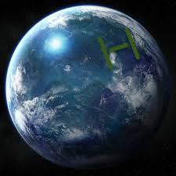

Scientists have recently discovered a previously unknown alien species. This species, known as the bobfish, is a highly advanced space faring species with technology that is almost futuristic to us. They seem very peaceful, but not enough research has been done about these creatures, so this may be proven false. The bobfish live on the water planet Aqius in the solar system of Nibius Solare, which is in the galaxy we call Andromeda. Andromeda is called the Galaxbob to the bobfish. These names are rough translations from the bobfish language, comprised of "nib", "nob", and "neeb". We are not sure how the bobfish communicate with just three words, but more research is going into this question.
An image of Aquis as seen from Earth
The bobfish are not the only creatures that live on there planet. Other species also dwell on this lively planet, and there are signs of activity on the other objects in this solar system. See other species for more details.
The Nibius Solare
There are three planets in the Nibius Solare. According to the names that the bobfish gave them, they are known as Aqius, Deltus, and Comex. Aqius has one natural satellite, the Noob. The other planets do not have any moons. However, each planet has hundreds of artificle satellites set by the bobfish. A small asteroid belt sits between Deltus and Aqius. The Nibius Solar is much smaller than our solar system, with a much smaller star. The water on Aqius seems to stay warm because of small objects orbitting Aqius. These objects also orbit the other planets as well, including the moon of Aqius. Closer investigation has shown us that these objects are actually living creatures that can reach the size of asteroids, spanning almost a mile in length. These creatures, called sun fish, can mysteroiusly survive in space with no food or oxygen for large periods of time. They eat passing asteroids when hungry. Scientist are researching these creatures to find out how they survive.